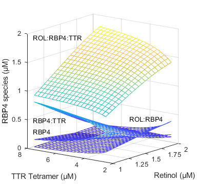
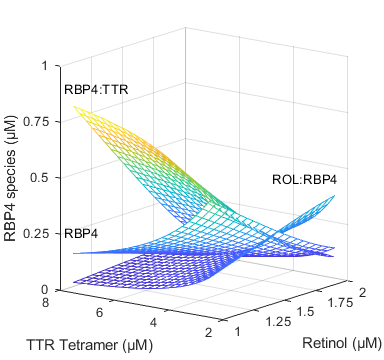
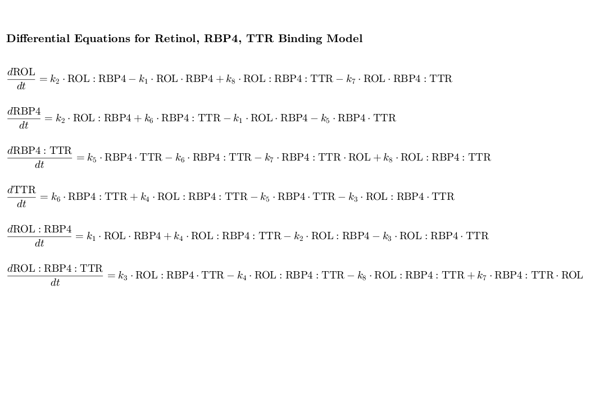

Contents
- MATLAB Code for Binding Model of RBP4, TTR, and Retinol
- Inputs for model
- Code implementation for all participants
- results table
- Sensitivity analysis varying TTR and Retinol concentrations
- results table for sensitivity analysis
- sensitivity analysis figures
- define odes
- define odes for sensitivity analysis
- System of ODEs
MATLAB Code for Binding Model of RBP4, TTR, and Retinol
clear clc
Inputs for model
define rate constants from literature Kds
k1 = 10e8 ; % diffusion (M^-1 s^-1) k2 = 1.46e-7 * k1; % Kd of 178 nM from Muhilal and Glover 1975, 190 nM Cogan 1976, 70 nM from Noy 1992 (mean = 146 nM) k3 = 10e8 ; % diffusion (M^-1 s^-1) k4 = 2.82e-7 * k3; % alpha*Kd1 (mean 215 nM from 150 nM from Rostom 1998, 294 nM White and Kelly 2001, 200 nM Malpeli 1996) k5 = 10e8 ; % diffusion (M^-1 s^-1) k6 = 1.2e-6 * k5; % Kd2 1.2 uM from Malpeli 1996 k7 = 10e8; % diffusion (M-1 s-1) k8 = 3.44e-8; % alpha*Kd2 (observed 35 nM Noy 1992) % Time span for the simulation tspan = [0 1]; %[inital:increment:end] % Constrain solutions to be positive options = odeset('MaxStep', 0.0001, 'NonNegative', 1:6);
Code implementation for all participants
% Import measured total concentrations for each particpiant % Define the parameters for each participant with a table opts = spreadsheetImportOptions("NumVariables", 4); % Specify sheet and range opts.Sheet = "Sheet1"; opts.DataRange = "A2:D32"; % Specify column names and types opts.VariableNames = ["ParticipantID", "ROL_total", "RBP4_total", "TTR_total"]; opts.VariableTypes = ["string", "double", "double", "double"]; % Specify variable properties opts = setvaropts(opts, "ParticipantID", "WhitespaceRule", "preserve"); opts = setvaropts(opts, "ParticipantID", "EmptyFieldRule", "auto"); % Import the data participants = readtable("C:\Users\isolab\UW\isolab - Aprajita Yadav\Manuscripts\Z_RBP4 TTR VAO Paper\Binding_model_git\VAOtable.xlsx", opts, "UseExcel", false); clear opts % Create an array for all the final results to go into ParticipantID = cell(height(participants), 1); ROLu_end = zeros(height(participants), 1); RBP4u_end = zeros(height(participants), 1); TTRu_end = zeros(height(participants), 1); aRBP4_TTR_end = zeros(height(participants), 1); hRBP4_end = zeros(height(participants), 1); hRBP4_TTR_end = zeros(height(participants), 1); ROL_total_end = zeros(height(participants), 1); RBP4_total_end = zeros(height(participants), 1); TTR_total_end = zeros(height(participants), 1); % loop for all participants for i = 1:height(participants) % Extract participant data ParticipantID{i} = participants.ParticipantID{i}; % Participant ID ROL_total = participants.ROL_total(i); % Total ROL for the participant RBP4_total = participants.RBP4_total(i); % Total RBP4 for the participant TTR_total = participants.TTR_total(i); % Total TTR for the participant % Initial conc (we assume nothing is complexed to start) initial_hRBP4 = 0; initial_hRBP4_TTR = 0; initial_aRBP4_TTR = 0; initial_ROL_u = ROL_total - initial_hRBP4 - initial_hRBP4_TTR; initial_RBP4_u = RBP4_total - initial_hRBP4 - initial_hRBP4_TTR - initial_aRBP4_TTR; initial_TTR_u = TTR_total - initial_hRBP4_TTR - initial_aRBP4_TTR; initial_conditions = [initial_ROL_u, initial_RBP4_u, initial_hRBP4, initial_TTR_u, initial_hRBP4_TTR, initial_aRBP4_TTR]; %solve ode [t, y] = ode89(@(t, y) odesystem(t, y, k1, k2, k3, k4, k5, k6, k7, k8), tspan, initial_conditions, options); % Convert y-axis to micromolar (µM) from molar (M) y_um = y * 1e6; % Convert concentration to µM %the following outputs the concentrations of all species at the end ROLu_end(i) = y_um(end, 1); RBP4u_end(i) = y_um(end, 2); aRBP4_TTR_end(i) = y_um(end, 3); TTRu_end(i) = y_um(end, 4); hRBP4_end(i) = y_um(end, 5); hRBP4_TTR_end(i) = y_um(end, 6); ROL_total_end(i) = ROLu_end(i) + hRBP4_end(i) + hRBP4_TTR_end(i); RBP4_total_end(i) = RBP4u_end(i) + aRBP4_TTR_end(i) + hRBP4_end(i) + hRBP4_TTR_end(i); TTR_total_end(i) = TTRu_end(i) + aRBP4_TTR_end(i) + hRBP4_TTR_end(i); end ParticipantID = cellstr(ParticipantID);
results table
Remove Percent sign to display and write results table to .csv
results_table = table(ParticipantID, ROLu_end, RBP4u_end, TTRu_end, aRBP4_TTR_end, hRBP4_end, hRBP4_TTR_end, ... ROL_total_end, RBP4_total_end, TTR_total_end, ... 'VariableNames', {'ParticipantID', 'ROL_u (µM)', 'RBP4_u (µM)', 'TTR_u (µM)', 'RBP4:TTR (µM)', 'ROL:RBP4 (µM)', ... 'ROL:RBP4:TTR (µM)', 'ROL_total (µM)', 'RBP4_total (µM)', 'TTR_total (µM)'}); % disp(results_table); % filename='RBP4_TTR_Retinol_Binding.csv'; % writetable(results_table, filename);
Sensitivity analysis varying TTR and Retinol concentrations
hold RBP4 constant at 2 µM
% ROL and TTR concentrations TTR_list = [2.5e-6:.25e-6:7.5e-6]; ROL_list = [1e-6:0.05e-6:2e-6]; % empty array for results ROLu_end_s = zeros(length(TTR_list), 1); RBP4u_end_s = zeros(length(TTR_list), 1); TTRu_end_s = zeros(length(TTR_list), 1); aRBP4_TTR_end_s = zeros(length(TTR_list), 1); hRBP4_end_s = zeros(length(TTR_list), 1); hRBP4_TTR_end_s = zeros(length(TTR_list), 1); ROL_total_end_s = zeros(length(TTR_list), 1); RBP4_total_end_s = zeros(length(TTR_list), 1); TTR_total_end_s = zeros(length(TTR_list), 1); Per_ROLu_end_s = zeros(length(TTR_list), 1); Per_complex_end_s = zeros(length(TTR_list), 1); Per_holo_end_s = zeros(length(TTR_list), 1); Per_RBP4u_end_s = zeros(length(TTR_list), 1); Per_hRBP4_end_s = zeros(length(TTR_list), 1); Per_aRBP4TTR_end_s = zeros(length(TTR_list), 1); Per_hRBP4_TTR_end_s = zeros(length(TTR_list), 1); for i = 1:length(TTR_list); TTR_total_s = TTR_list(i); for j = 1:length(ROL_list); RBP4_total_s = 2e-6; ROL_total_s= ROL_list(j); % Initial conc (we assume nothing is complexed to start) initial_hRBP4_s = 0; initial_hRBP4_TTR_s = 0; initial_aRBP4_TTR_s = 0; initial_ROL_u_s = ROL_total_s - initial_hRBP4_s - initial_hRBP4_TTR_s; initial_RBP4_u_s = RBP4_total_s - initial_hRBP4_s - initial_hRBP4_TTR_s - initial_aRBP4_TTR_s; initial_TTR_u_s = TTR_total_s - initial_hRBP4_TTR_s - initial_aRBP4_TTR_s; initial_conditions_s = [initial_ROL_u_s, initial_RBP4_u_s, initial_hRBP4_s, initial_TTR_u_s, initial_hRBP4_TTR_s, initial_aRBP4_TTR_s]; % solve odes [t, y] = ode89(@(t, y) odesystem_s(t, y, k1, k2, k3, k4, k5, k6, k7, k8), tspan, initial_conditions_s, options); % Convert y-axis to micromolar (µM) from molar (M) y_um = y * 1e6; % Convert concentration to µM % the following outputs the concentrations of all species at the end ROLu_end_s(j, i) = y_um(end, 1); RBP4u_end_s(j, i) = y_um(end, 2); aRBP4_TTR_end_s(j, i) = y_um(end, 3); TTRu_end_s(j, i) = y_um(end, 4); hRBP4_end_s(j, i) = y_um(end, 5); hRBP4_TTR_end_s(j, i) = y_um(end, 6); % total concentrations ROL_total_end_s(j, i) = ROLu_end_s(j, i) + hRBP4_end_s(j, i) + hRBP4_TTR_end_s(j, i); RBP4_total_end_s(j, i) = RBP4u_end_s(j, i) + aRBP4_TTR_end_s(j, i) + hRBP4_end_s(j, i) + hRBP4_TTR_end_s(j, i); TTR_total_end_s(j, i) = TTRu_end_s(j, i) + aRBP4_TTR_end_s(j, i) + hRBP4_TTR_end_s(j, i); % calculate percentages Per_ROLu_end_s(j, i) = (ROLu_end_s(j, i) / ROL_total_end_s(j, i))*100 ; Per_complex_end_s(j, i) = (hRBP4_TTR_end_s(j, i)/ROL_total_end_s(j, i))*100; Per_holo_end_s(j, i) = (hRBP4_end_s(j, i)/ROL_total_end_s(j, i))*100; Per_RBP4u_end_s(j, i) = (RBP4u_end_s(j,i) / RBP4_total_end_s(j,i))*100; Per_hRBP4_end_s(j, i) = (hRBP4_end_s(j,i) / RBP4_total_end_s(j,i))*100; Per_aRBP4TTR_end_s(j, i) = (aRBP4_TTR_end_s(j,i) / RBP4_total_end_s(j,i))*100; Per_hRBP4_TTR_end_s(j, i) = (hRBP4_TTR_end_s(j,i)/RBP4_total_end_s(j, i))*100; end end
results table for sensitivity analysis
results_table_s = table(ROLu_end_s, RBP4u_end_s, TTRu_end_s, ... aRBP4_TTR_end_s, hRBP4_end_s, hRBP4_TTR_end_s, ROL_total_end_s, ... RBP4_total_end_s, TTR_total_end_s, Per_ROLu_end_s, Per_complex_end_s, ... Per_holo_end_s, Per_RBP4u_end_s, Per_hRBP4_end_s, Per_aRBP4TTR_end_s, ... Per_hRBP4_TTR_end_s, 'VariableNames', {'ROL (µM)', 'RBP4 (µM)', ... 'TTR (µM)', 'RBP4:TTR (µM)', 'ROL:RBP4 (µM)', 'ROL:RBP4:TTR (µM)', ... 'ROL_total (µM)', 'RBP4_total (µM)', 'TTR_total (µM)', ... 'Percent Retinol unbound','Percent ROL:RBP4:TTR', 'Percent ROL:RBP4', ... 'Percent apo-RBP4', 'Percent holoRBP4', 'Percent RBP4:TTR', ... 'Percent complex RBP4'}); %disp(results_table); %remove percent sign to display results table
sensitivity analysis figures
screen_size = get(0, 'ScreenSize'); fig_width = screen_size(3) /5; fig_height = screen_size(4) / 3; % figure 3 figure3 = figure('Position', [0, screen_size(4)/4, fig_width, fig_height]); axes3 = axes('Parent', figure3); hold(axes3, 'on'); % Create mesh mesh(ROL_total_end_s,TTR_total_end_s,RBP4u_end_s, 'Parent',axes3); mesh(ROL_total_end_s,TTR_total_end_s,hRBP4_end_s, 'Parent',axes3); mesh(ROL_total_end_s,TTR_total_end_s,aRBP4_TTR_end_s, 'Parent',axes3); mesh(ROL_total_end_s,TTR_total_end_s,hRBP4_TTR_end_s, 'Parent',axes3); % Axis labels zlabel(axes3, {'RBP4 species (µM)'}); ylabel(axes3, {'TTR Tetramer (µM)'}); xlabel(axes3, {'Retinol (µM)'}); % Viewing angle view(axes3,[-52.5 12.4]); grid(axes3, 'on'); set(axes3,'XTick',[1 1.25 1.5 1.75 2],'YTick',[2 4 6 8],'YTickLabel',... {'2','4','6','8'},'ZTick', [0 0.5 1 1.5 2]); axes3.XTickLabelRotation = 0; % Create textboxes annotation(figure3,'textbox',[0.15 0.32 0.19 0.06],'String',{'RBP4:TTR'},'LineStyle','none'); annotation(figure3,'textbox',[0.15 0.26 0.14 0.06],'String',{'RBP4'},'LineStyle','none'); annotation(figure3,'textbox',[0.64 0.33 0.26 0.06],'String',{'ROL:RBP4'},'LineStyle','none'); annotation(figure3,'textbox',[0.15 0.77 0.64 0.06],'String',{'ROL:RBP4:TTR'},'LineStyle','none'); hold(axes3, 'off') % figure 2 figure2 = figure('Position', [fig_width, screen_size(4)/4, fig_width, fig_height]); % Position on the right side axes2 = axes('Parent', figure2); hold(axes2, 'on'); % Create mesh mesh(ROL_total_end_s,TTR_total_end_s,RBP4u_end_s, 'Parent', axes2); mesh(ROL_total_end_s,TTR_total_end_s,hRBP4_end_s, 'Parent', axes2); mesh(ROL_total_end_s,TTR_total_end_s,aRBP4_TTR_end_s, 'Parent', axes2); % Create axis labels zlabel(axes2, {'RBP4 species (µM)'}); ylabel(axes2, {'TTR Tetramer (µM)'}); xlabel(axes2, {'Retinol (µM)'}); % Viewing angle view(axes2, [-52.5 12.4]); grid(axes2, 'on'); set(axes2,'XTick',[1 1.25 1.5 1.75 2], 'YTick',[2 4 6 8],'YTickLabel',... {'2','4','6','8'},'ZTick',[0 0.25 0.5 0.75 1]); axes2.XTickLabelRotation = 0; % Create textboxes annotation(figure2,'textbox',[0.15 0.71 0.25 0.08],'String',{'RBP4:TTR'},'LineStyle','none'); annotation(figure2,'textbox',[0.15 0.31 0.19 0.08],'String',{'RBP4'},'LineStyle','none'); annotation(figure2,'textbox',[0.69 0.46 0.26 0.08],'String',{'ROL:RBP4'},'LineStyle','none'); hold(axes2, 'off')
define odes
function dydt = odesystem(t, y, k1, k2, k3, k4, k5, k6, k7, k8) ROL_u = y(1); RBP4_u = y(2); aRBP4_TTR = y(3); TTR_u = y(4); hRBP4 = y(5); hRBP4_TTR = y(6); % Differential equations dROL_u = k2 * hRBP4 - k1 * ROL_u * RBP4_u +k8*hRBP4_TTR - k7*ROL_u*aRBP4_TTR; dRBP4_u = k2 * hRBP4 + k6 * aRBP4_TTR - k1 * ROL_u * RBP4_u - k5 * RBP4_u * TTR_u; daRBP4_TTR = k5 * RBP4_u * TTR_u - k6 * aRBP4_TTR - k7 * aRBP4_TTR * ROL_u + k8 * hRBP4_TTR; dTTR_u = k6 * aRBP4_TTR + k4 * hRBP4_TTR - k5 * RBP4_u * TTR_u - k3 * hRBP4 * TTR_u; dhRBP4 = k1 * ROL_u * RBP4_u + k4 * hRBP4_TTR - k2 * hRBP4 - k3 * hRBP4 * TTR_u; dhRBP4_TTR = k3 * hRBP4 * TTR_u - k4 * hRBP4_TTR - k8* hRBP4_TTR + k7* aRBP4_TTR * ROL_u; % Results as vector dydt = [dROL_u; dRBP4_u; daRBP4_TTR; dTTR_u; dhRBP4; dhRBP4_TTR]; end
define odes for sensitivity analysis
function dydt = odesystem_s(t, y, k1, k2, k3, k4, k5, k6, k7, k8) ROL_u_s = y(1); RBP4_u_s = y(2); aRBP4_TTR_s = y(3); TTR_u_s = y(4); hRBP4_s = y(5); hRBP4_TTR_s = y(6); % Differential equations dROL_u_s = k2 * hRBP4_s - k1 * ROL_u_s * RBP4_u_s +k8*hRBP4_TTR_s - k7*ROL_u_s*aRBP4_TTR_s; dRBP4_u_s = k2 * hRBP4_s + k6 * aRBP4_TTR_s - k1 * ROL_u_s * RBP4_u_s - k5 * RBP4_u_s * TTR_u_s; daRBP4_TTR_s = k5 * RBP4_u_s * TTR_u_s - k6 * aRBP4_TTR_s - k7 * aRBP4_TTR_s * ROL_u_s + k8 * hRBP4_TTR_s; dTTR_u_s = k6 * aRBP4_TTR_s + k4 * hRBP4_TTR_s - k5 * RBP4_u_s * TTR_u_s - k3 * hRBP4_s * TTR_u_s; dhRBP4_s = k1 * ROL_u_s * RBP4_u_s + k4 * hRBP4_TTR_s - k2 * hRBP4_s - k3 * hRBP4_s * TTR_u_s; dhRBP4_TTR_s = k3 * hRBP4_s * TTR_u_s - k4 * hRBP4_TTR_s - k8* hRBP4_TTR_s + k7* aRBP4_TTR_s * ROL_u_s; % Results as vector dydt = [dROL_u_s; dRBP4_u_s; daRBP4_TTR_s; dTTR_u_s; dhRBP4_s; dhRBP4_TTR_s]; end 
System of ODEs
figure1=figure('Color','w', 'Position', [100, 100, 1066, 700]); axis off hold on y_start = 0.8; dy = 0.1; fs = 14; % Define each equation eqns = { '$$\frac{d\mathrm{ROL}}{dt} = k_2 \cdot \mathrm{ROL:RBP4} - k_1 \cdot \mathrm{ROL} \cdot \mathrm{RBP4} + k_8 \cdot \mathrm{ROL:RBP4:TTR} - k_7 \cdot \mathrm{ROL} \cdot \mathrm{RBP4:TTR}$$' '$$\frac{d\mathrm{RBP4}}{dt} = k_2 \cdot \mathrm{ROL:RBP4} + k_6 \cdot \mathrm{RBP4:TTR} - k_1 \cdot \mathrm{ROL} \cdot \mathrm{RBP4} - k_5 \cdot \mathrm{RBP4} \cdot \mathrm{TTR}$$' '$$\frac{d\mathrm{RBP4:TTR}}{dt} = k_5 \cdot \mathrm{RBP4} \cdot \mathrm{TTR} - k_6 \cdot \mathrm{RBP4:TTR} - k_7 \cdot \mathrm{RBP4:TTR} \cdot \mathrm{ROL} + k_8 \cdot \mathrm{ROL:RBP4:TTR}$$' '$$\frac{d\mathrm{TTR}}{dt} = k_6 \cdot \mathrm{RBP4:TTR} + k_4 \cdot \mathrm{ROL:RBP4:TTR} - k_5 \cdot \mathrm{RBP4} \cdot \mathrm{TTR} - k_3 \cdot \mathrm{ROL:RBP4} \cdot \mathrm{TTR}$$' '$$\frac{d\mathrm{ROL:RBP4}}{dt} = k_1 \cdot \mathrm{ROL} \cdot \mathrm{RBP4} + k_4 \cdot \mathrm{ROL:RBP4:TTR} - k_2 \cdot \mathrm{ROL:RBP4} - k_3 \cdot \mathrm{ROL:RBP4} \cdot \mathrm{TTR}$$' '$$\frac{d\mathrm{ROL:RBP4:TTR}}{dt} = k_3 \cdot \mathrm{ROL:RBP4} \cdot \mathrm{TTR} - k_4 \cdot \mathrm{ROL:RBP4:TTR} - k_8 \cdot \mathrm{ROL:RBP4:TTR} + k_7 \cdot \mathrm{RBP4:TTR} \cdot \mathrm{ROL}$$' }; % Loop through and add each equation for i = 1:length(eqns) text(0.01, y_start - (i-1)*dy, eqns{i}, 'Interpreter', 'latex', 'FontSize', fs) end % Add a title at the top text(0.01, 0.9, '\textbf{Differential Equations for Retinol, RBP4, TTR Binding Model}', 'Interpreter', 'latex', 'FontSize', fs+1) hold off set(gca,'Position',[0 0 1 1])